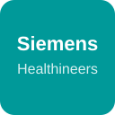
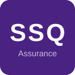

Hello, I'm
Workday Solutions Architect with 8 years of implementation experience across Finance, Banking, Healthcare, Government, Insurance & Manufacturing. Canadian & French (EU) citizen.
Workday Solutions Architect with extensive experience in HCM, Absence Management, Time Tracking, Advanced & Composite Reporting, and experience in Compensation, Advanced Compensation, Payroll, Security, Benefits and Data Conversion.
8 years of Workday implementation experience including Phase 1, Phase 2, Phase X and AMS for 10+ customers across Canada, United States and Europe.
After 3 years as a PwC Canada Consultant (2018–2021), I've spent the past 5 years as an independent consultant, incorporated in Canada as Adhris Consulting Inc.
Phase 1, Phase 2, Phase X and AMS across Finance, Healthcare, Media, Tech, Retail & more
Projects spanning Canada, United States and 30+ countries in Europe
Managed teams of analysts and consultants, acted as SCRUM master & Workday SME
Intact Insurance Financial

Siemens Healthineers Healthcare
CBC / Radio-Canada Media
Dentalcorp Healthcare
CAA Quebec Travel & Insurance
Unity Technologies Tech
PwC Global Consulting
Canadian Tire Retail
Cogeco Telecom
Fonds de Solidarité FTQ Financial Services

SSQ Insurance Insurance
Active as of January 2026
McGill University — Desautels School of Business
Graduated May 2018
Triple Minor in Business Analytics, Information Systems and International Business
Interested in transforming your HR systems or leveraging People Analytics? I'd love to hear from you.